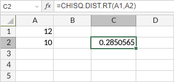

Funkcija CHISQ.DIST.RT
Funkcija CHISQ.DIST.RT je jedna od statističkih funkcija. Koristi se za vraćanje desnostrane verovatnoće hi-kvadrat raspodele.
Sintaksa
CHISQ.DIST.RT(x, deg_freedom)
Funkcija CHISQ.DIST.RT ima sledeće argumente:
| Argument | Opis |
|---|---|
| x | Vrednost za koju želite da izračunate hi-kvadrat raspodelu. Numerička vrednost veća ili jednaka 0. |
| deg_freedom | Broj stepeni slobode. Numerička vrednost veća ili jednaka 1, ali manja ili jednaka 10^10. |
Napomene
Kako primeniti funkciju CHISQ.DIST.RT.
Primeri
Slika ispod prikazuje rezultat koji vraća funkcija CHISQ.DIST.RT.
